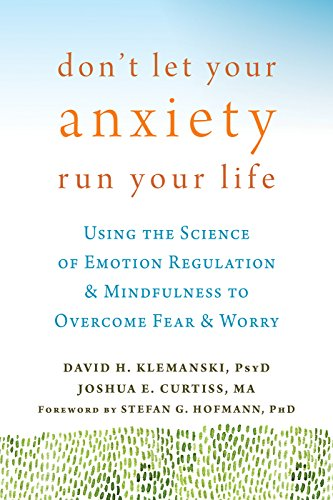

<!-- Book -->
<section class="page-section">
    <div class="container">
      <div class="row">
        <div class="col-lg-8 mx-auto text-center">
          <h3 class="section-heading">Don't Let Anxiety Run Your Life: <br>Using the Science of Emotion Regulation and Mindfulness to Overcome Fear and Worry</h3>
          <br>
          
          <br><br>
          <div class="large text-muted" align="justify">{{"This is the first book to present an integrated model of mindfulness and
              emotion regulation—both clinically proven for reducing anxiety symptoms. Using these easy mindfulness 
              practices, you’ll learn to manage your emotions and lessen your anxiety, leading to improvements in your 
              social life, work obligations, and family responsibilities<br><br>Now available 
              [here](https://www.amazon.com/gp/product/1626254168/sr=1-1/qid=1444804572/ref=olp_product_details?ie=UTF8&me=&qid=1444804572&sr=1-1)."
              | markdownify }}
              </div>
          <br><br>
          <div class="col-lg-8 mx-auto text-center">
          <h3 class="section-heading">Anxiety Skills Workbook:<br> Simple CBT and Mindfulness Strategies for Overcoming Anxiety, Fear, and Worry: </h3>
          <br>
          
          <br><br>
          <div class="large text-muted" align="justify">{{"Dr. Curtiss co-authored The Anxiety Skills Workbook with Dr. Stefan Hofmann. In The Anxiety Skills Workbook, you'll find tons of tips and tricks for managing 
              your anxiety and worry using cognitive behavioral therapy (CBT) and mindfulness. Based on the evidence-based treatment model developed 
              at the Center for Anxiety and Related Disorders at Boston University--one of the premier anxiety centers in the world--this book will help 
              you understand and effectively deal with anxiety and worry anytime, anywhere. The unique module format of this workbook allows you to focus on 
              your own individual anxiety and worry patterns. <br><br>Now available 
              [here](https://www.amazon.com/Anxiety-Skills-Workbook-Mindfulness-Strategies/dp/1684034523)."
              | markdownify }}
              </div>
          </div>
        </div>
      </div>
    </div>
</section>
<!-- End Book -->
